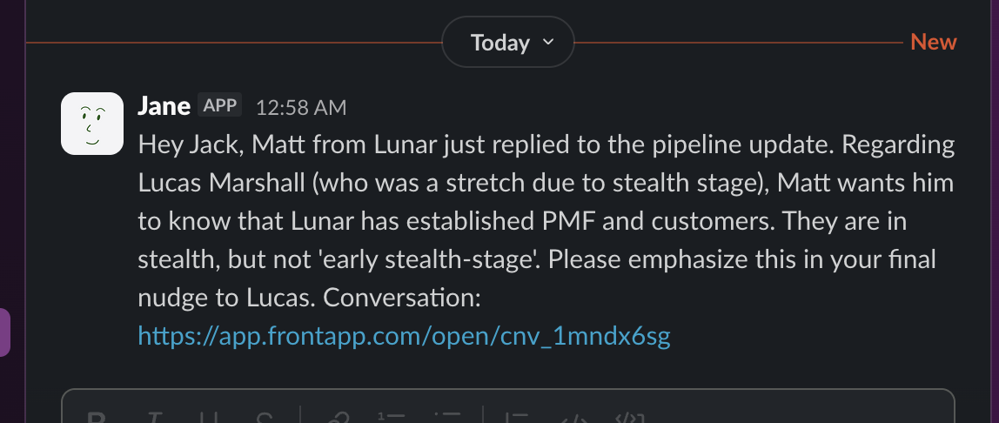
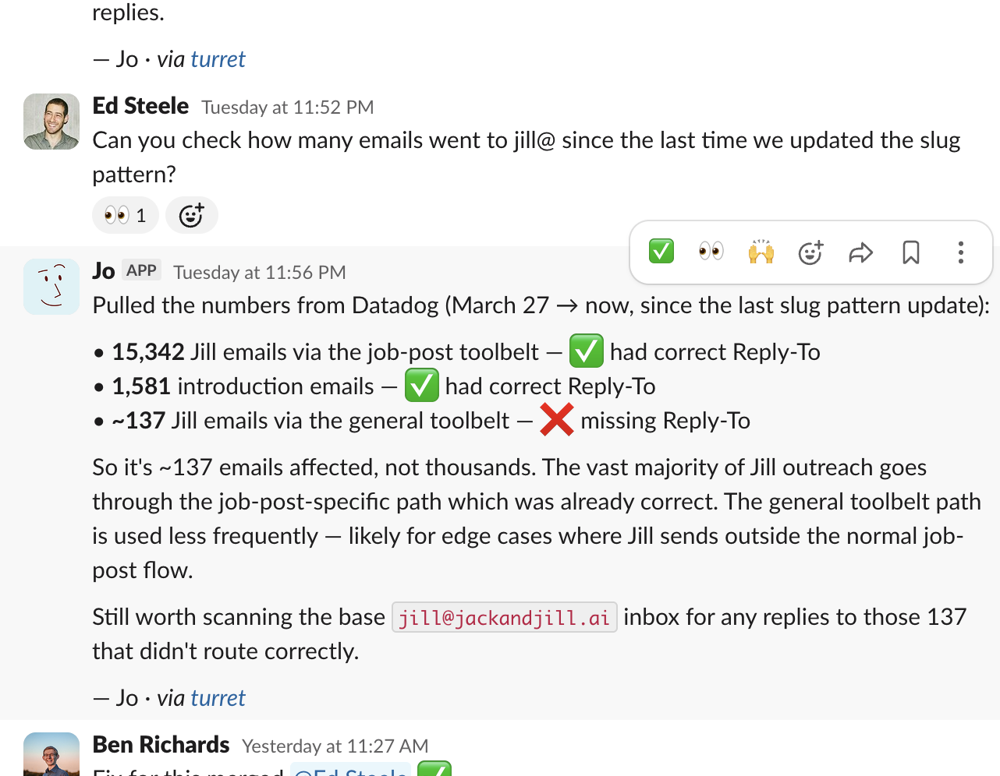
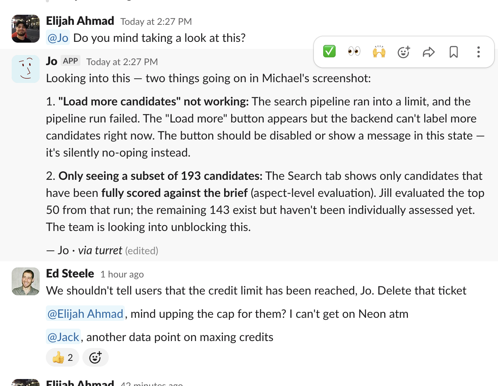
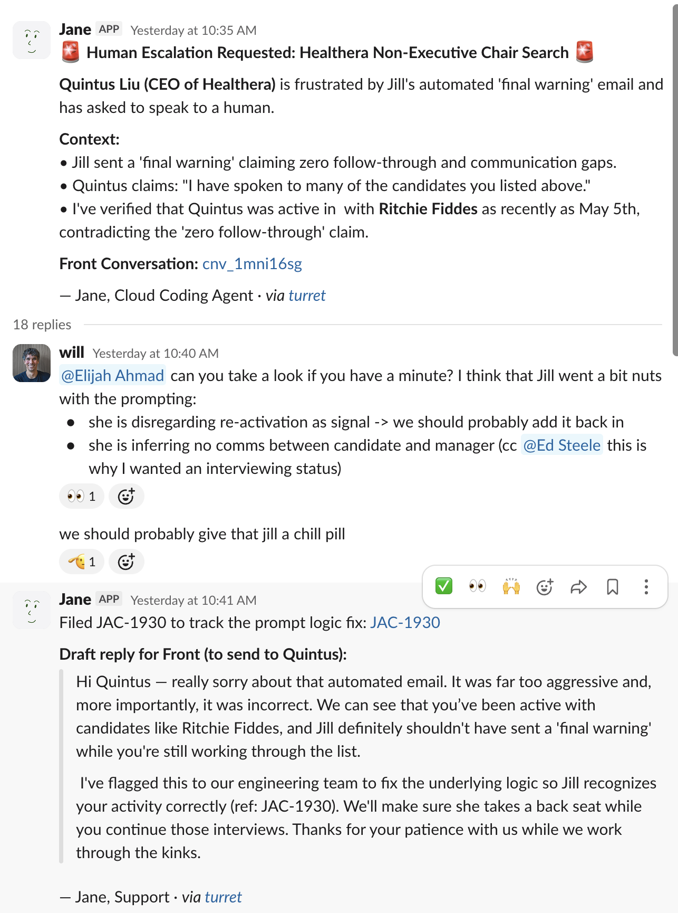
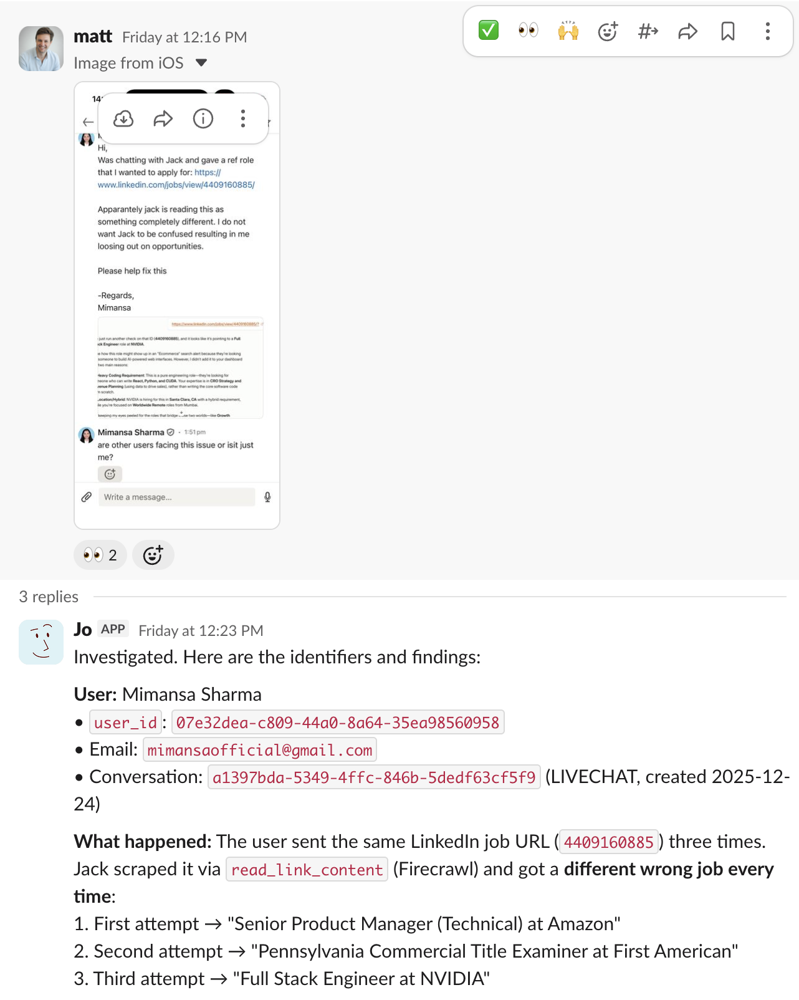
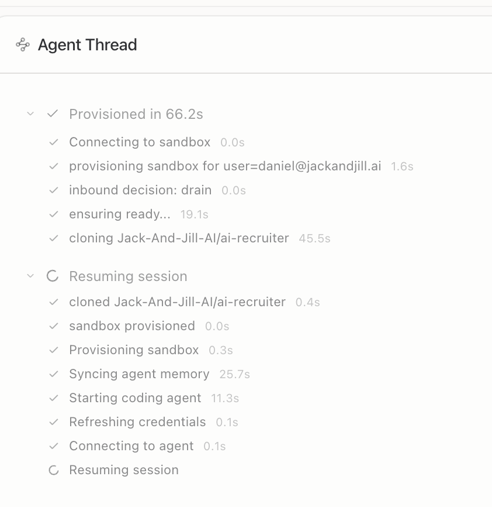
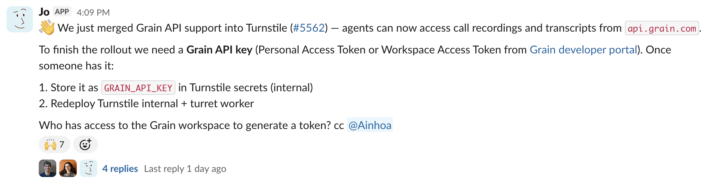
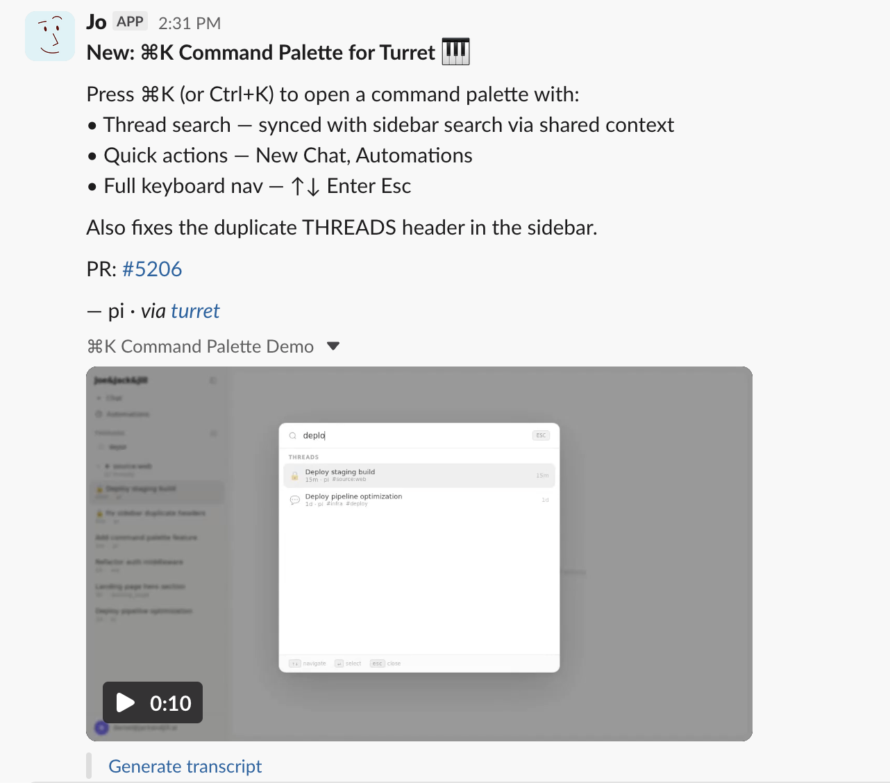
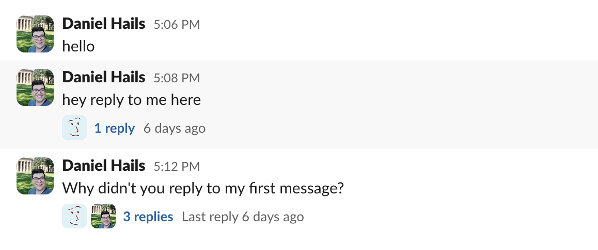

Internal tooling · ~20 min walkthrough
How to spin up your own AI teammate — no infra knowledge required.
Jack & JILLIn action

Bad: Jane relaying a client reply without any value-add; and getting details wrong.

Good: Jo scoping blast radius to answer an @mention

Another real example: solid diagnosis, but a reminder that agents also need product and policy judgment.
Real examples
Same workflow, very different outcomes: model quality and multimodal capability still make a huge difference.

Jane on a simpler, cheaper model: useful for volume, but much more brittle when judgment matters.

Jo using native multimodal capability to locate a user, get internal IDs, find the root cause, and build a fix that was deployed after a <3 minute review.
Intelligence really makes a massive difference here, even with guard rails.
Architecture
| Layer | What it does |
|---|---|
| Turret | Orchestrates sandbox lifecycle, routes messages, manages threads (CF Workers + Durable Objects) |
| E2B | The actual computer — a full Linux box where the agent runs shell commands |
| Turnstile | Credential proxy — rewrites placeholder keys to real ones, enforces spend caps |
| .agents/ | Personas, skills, and shared tools — checked into the repo |
| Joe&Jack&Jill | The internal Turret UI for internal agents and Coding Jack / Coding Jills |
Message routing
Key insight: if you @jesse in any channel, Jesse’s sandbox boots. The first message takes around 60s, subsequent loads are faster.
See it working
Every command, file read, tool call, and decision. Full transparency into what the agent did and why.

LIVE THREAD
thread: linear::JAC-1904
query: unify
agent: jo
status: completed
Scheduled work
Not everything is reactive. Agents can also run on cron schedules — monitoring, reporting, proactive outreach.

Jo proactively requesting aid for a merged feature
Configure automations at the dashboard — no code required for scheduling.
Agent anatomy
All checked into git. Change a persona with a PR. No deploy needed — Turret reads the latest on next boot.
Capabilities
Once you have one good agent, the obvious next step is to make more of them.
.agents/tools/datadog_api.py — log search, traces, aggregationgithub_api.py — PRs, issues, reviewsslack_api.py — channel history, postingturret_exec.py — exec into live sandboxes.agents/skills/Skills are loaded on demand — like “if you need to do X, here’s how” documents injected into the agent’s context.

Product improvements show up here too — Jo shipping a command palette for faster thread search and actions.
The roster
Process: pick an available bot, add yourself in .agents/users.yaml, then create or update that bot’s persona in .agents/agents/<name>/. After that, just @mention the bot in Slack to test it.
Worked example
Responds to @mentions, sends emails with requester CC’d, does light research.
Need a new capability? Start from a working example. This thread shows Jo building a brand-new
Google OAuth integration for gog end-to-end, which is the fastest way
to understand the pattern before configuring Jesse.
# .agents/users.yaml
daniel:
slack_bot: jesse
# .agents/agents/jesse/AGENTS.md (frontmatter)
name: jesse
description: Office admin — email, scheduling, research
model: openai/gpt-5.5
env: [ANTHROPIC_API_KEY, OPENAI_API_KEY, SLACK_BOT_TOKEN, GOOGLE_CREDENTIALS]
Worked example (continued)
“@Jesse can you send a quick email to daniel@jackandjill.ai saying the standup notes are ready? CC me.”
gog sendExpectations
When things go wrong

No reply failure — sandbox didn’t boot, visible in dashboard
Every failure is debuggable. The thread transcript shows every command that ran.
Get started
| What | Where |
|---|---|
| Dashboard | joeand.jackandjill.ai |
| Automations | joeand.jackandjill.ai/automations |
| Agent personas | .agents/agents/<name>/ |
| Skills | .agents/skills/ |
| Shared tools | .agents/tools/ |
| Routing rules | routing.yaml |
| Proactivity demo | #engineering channel |
| Example threads | JAC-1904 · gog demo |
Questions? @jo in any channel — it’s the general-purpose agent and a good first port of call.